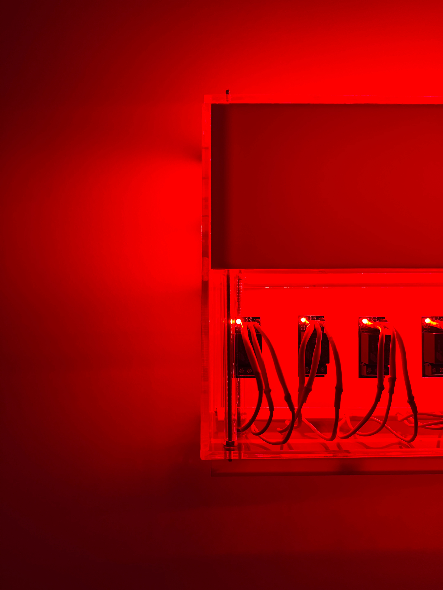
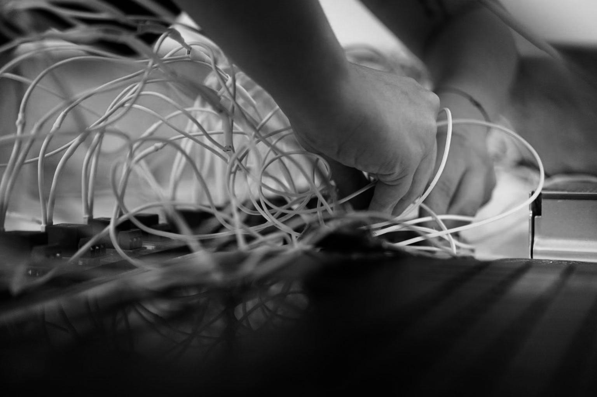
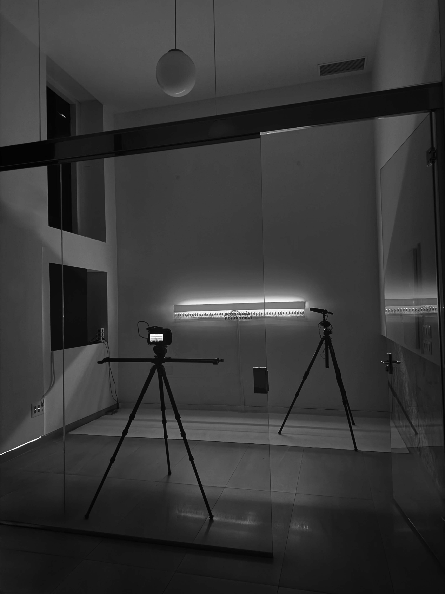
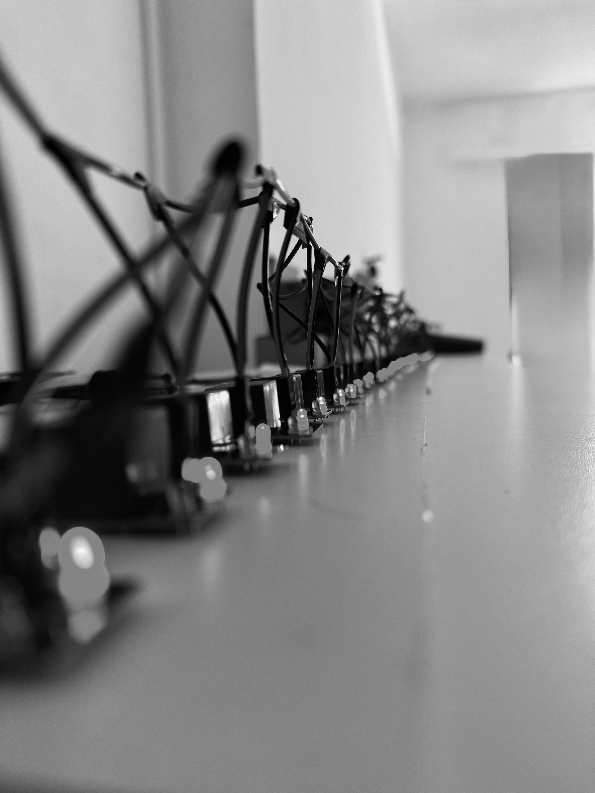
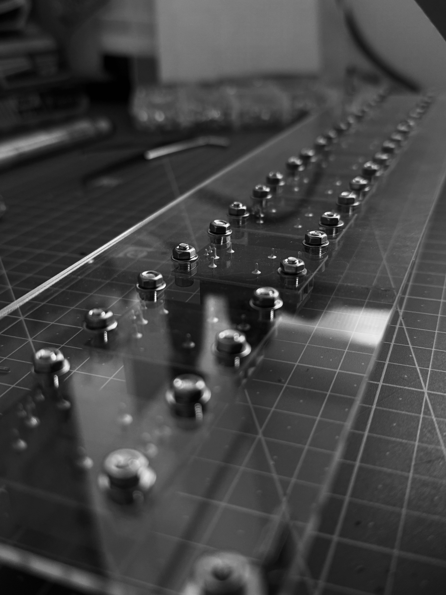
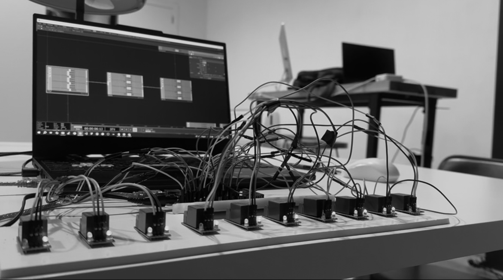
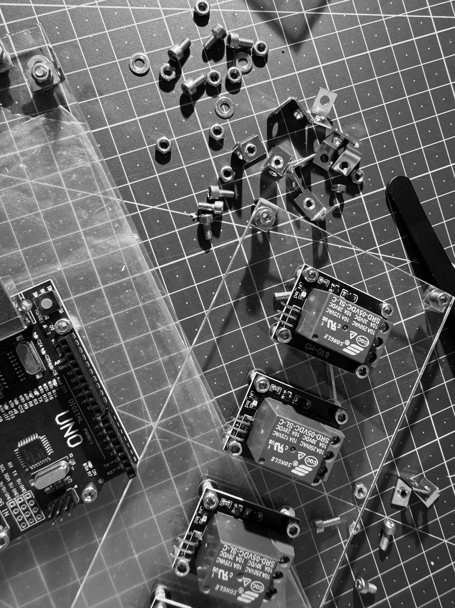
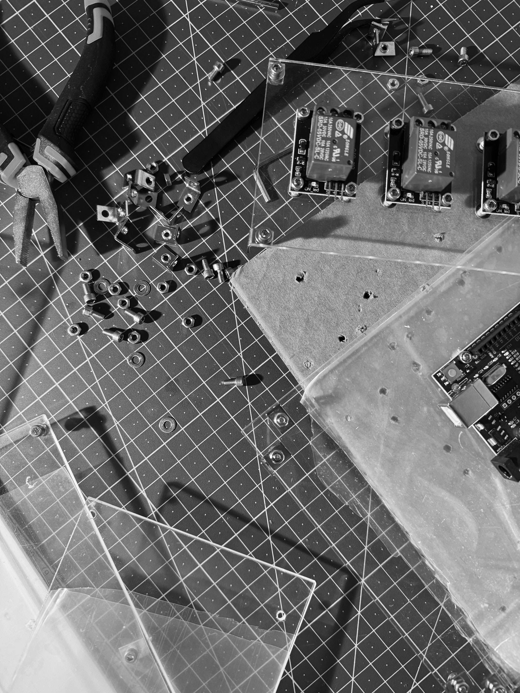
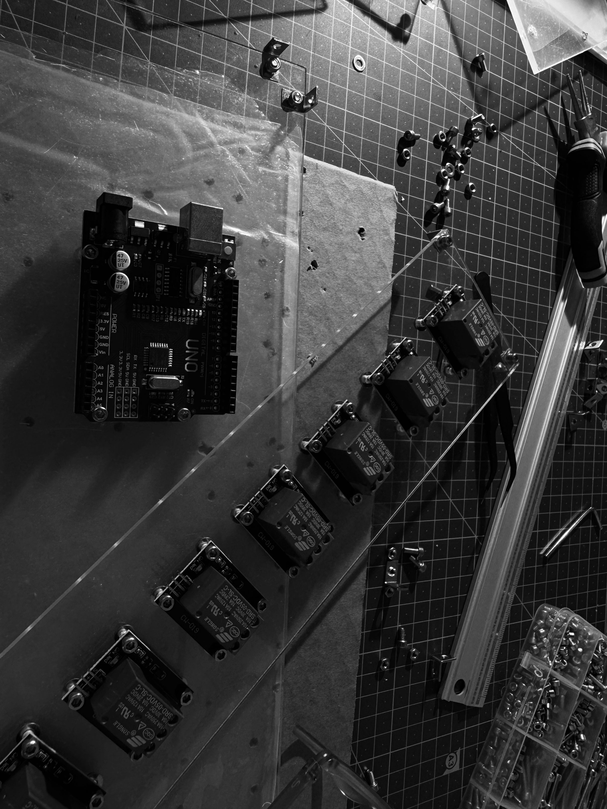
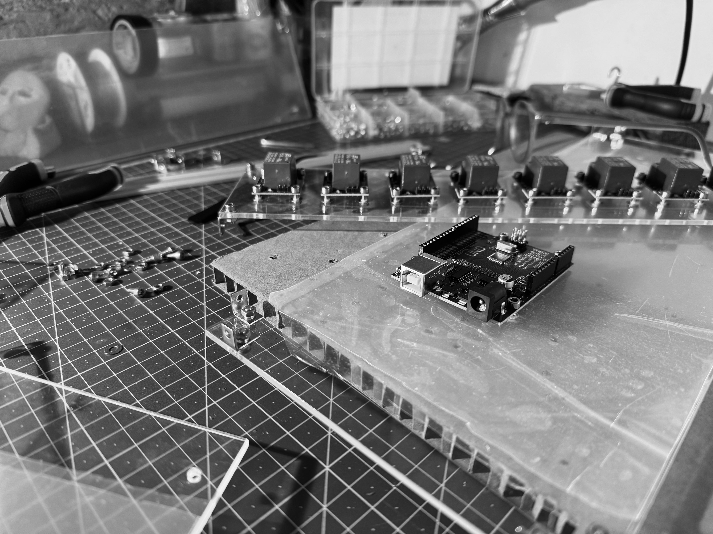

Sonic
Artefacts
Artwork Description
Sonic Artefacts is a sound–light sculpture that reveals the hidden infrastructures of technology by treating its components not as tools, but as subjects in themselves. What you see is what you hear: the technology is both the medium and the subject. When isolated and framed transparently, simple industrial elements become expressive, shifting from functional objects to sonic and visual performers.
Rather than focusing on narrative, the project draws attention to patterns and details that are normally hidden and mundane in everyday life. Through Sonic Artefacts, I aim to reframe the aesthetics of electronic components and everyday found objects, transforming overlooked mechanisms of technology into visible and audible phenomena.
The project invites reflection on how technological systems shape our sensory environment and our relationship with technological infrastructures.


Process Images










